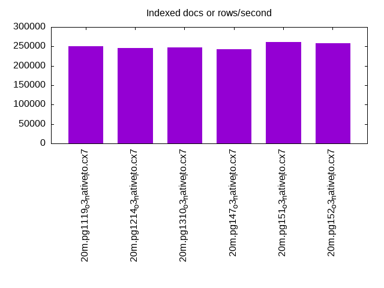
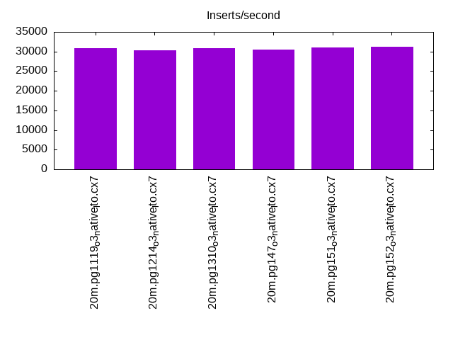
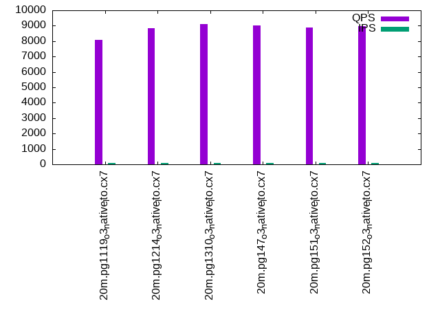
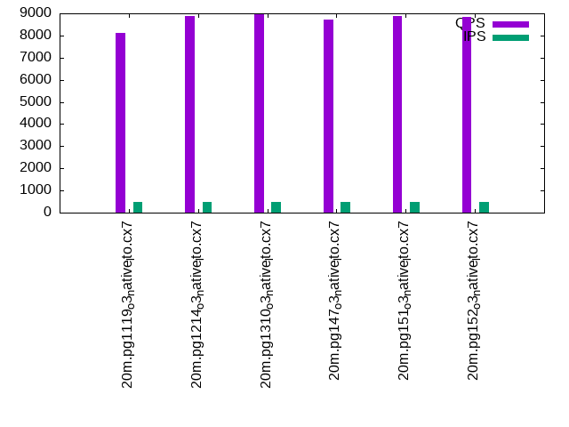
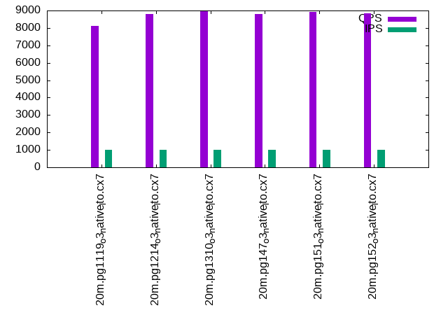

This is a report for the insert benchmark with 20M docs and 1 client(s). It is generated by scripts (bash, awk, sed) and Tufte might not be impressed. An overview of the insert benchmark is here and a short update is here. Below, by DBMS, I mean DBMS+version.config. An example is my8020.c10b40 where my means MySQL, 8020 is version 8.0.20 and c10b40 is the name for the configuration file.
The test server has 8 AMD cores, 16G RAM and an NVMe SSD. It is described here as the Beelink. The benchmark was run with 1 client and there were 1 or 2 connections per client (1 for queries, 1 for inserts). It uses 1 table. It loads 20M rows without secondary indexes, creates secondary indexes, loads another 20M rows then does 3 read+write tests for one hour each that do queries as fast as possible with 100, 500 and then 1000 writes/second/client concurrent with the queries. The database is cached by the storage engine and the only IO is for writes. Clients and the DBMS share one server. The per-database configs are in the per-database subdirectories here.
The tested DBMS are:
The numbers are inserts/s for l.i0 and l.i1, indexed docs (or rows) /s for l.x and queries/s for q*.2. The values are the average rate over the entire test for inserts (IPS) and queries (QPS). The range of values for IPS and QPS is split into 3 parts: bottom 25%, middle 50%, top 25%. Values in the bottom 25% have a red background, values in the top 25% have a green background and values in the middle have no color. A gray background is used for values that can be ignored because the DBMS did not sustain the target insert rate. Red backgrounds are not used when the minimum value is within 80% of the max value.
| dbms | l.i0 | l.x | l.i1 | q100.1 | q500.1 | q1000.1 |
|---|---|---|---|---|---|---|
| 20m.pg1119_o3_native_lto.cx7 | 81967 | 251250 | 30912 | 8063 | 8109 | 8120 |
| 20m.pg1214_o3_native_lto.cx7 | 80645 | 245122 | 30349 | 8831 | 8866 | 8808 |
| 20m.pg1310_o3_native_lto.cx7 | 85106 | 248148 | 30864 | 9103 | 8991 | 8944 |
| 20m.pg147_o3_native_lto.cx7 | 79681 | 242169 | 30441 | 9024 | 8738 | 8782 |
| 20m.pg151_o3_native_lto.cx7 | 85470 | 261039 | 31056 | 8894 | 8880 | 8912 |
| 20m.pg152_o3_native_lto.cx7 | 85470 | 257692 | 31250 | 8962 | 8824 | 8839 |
This table has relative throughput, throughput for the DBMS relative to the DBMS in the first line, using the absolute throughput from the previous table.
| dbms | l.i0 | l.x | l.i1 | q100.1 | q500.1 | q1000.1 |
|---|---|---|---|---|---|---|
| 20m.pg1119_o3_native_lto.cx7 | 1.00 | 1.00 | 1.00 | 1.00 | 1.00 | 1.00 |
| 20m.pg1214_o3_native_lto.cx7 | 0.98 | 0.98 | 0.98 | 1.10 | 1.09 | 1.08 |
| 20m.pg1310_o3_native_lto.cx7 | 1.04 | 0.99 | 1.00 | 1.13 | 1.11 | 1.10 |
| 20m.pg147_o3_native_lto.cx7 | 0.97 | 0.96 | 0.98 | 1.12 | 1.08 | 1.08 |
| 20m.pg151_o3_native_lto.cx7 | 1.04 | 1.04 | 1.00 | 1.10 | 1.10 | 1.10 |
| 20m.pg152_o3_native_lto.cx7 | 1.04 | 1.03 | 1.01 | 1.11 | 1.09 | 1.09 |
This lists the average rate of inserts/s for the tests that do inserts concurrent with queries. For such tests the query rate is listed in the table above. The read+write tests are setup so that the insert rate should match the target rate every second. Cells that are not at least 95% of the target have a red background to indicate a failure to satisfy the target.
| dbms | q100.1 | q500.1 | q1000.1 |
|---|---|---|---|
| pg1119_o3_native_lto.cx7 | 100 | 499 | 998 |
| pg1214_o3_native_lto.cx7 | 100 | 499 | 998 |
| pg1310_o3_native_lto.cx7 | 100 | 499 | 998 |
| pg147_o3_native_lto.cx7 | 100 | 499 | 998 |
| pg151_o3_native_lto.cx7 | 100 | 499 | 997 |
| pg152_o3_native_lto.cx7 | 100 | 499 | 998 |
| target | 100 | 500 | 1000 |
l.i0: load without secondary indexes. Graphs for performance per 1-second interval are here.
Average throughput:
Insert response time histogram: each cell has the percentage of responses that take <= the time in the header and max is the max response time in seconds. For the max column values in the top 25% of the range have a red background and in the bottom 25% of the range have a green background. The red background is not used when the min value is within 80% of the max value.
| dbms | 256us | 1ms | 4ms | 16ms | 64ms | 256ms | 1s | 4s | 16s | gt | max |
|---|---|---|---|---|---|---|---|---|---|---|---|
| pg1119_o3_native_lto.cx7 | 100.000 | 0.003 | |||||||||
| pg1214_o3_native_lto.cx7 | 100.000 | 0.004 | |||||||||
| pg1310_o3_native_lto.cx7 | 0.016 | 99.984 | 0.004 | ||||||||
| pg147_o3_native_lto.cx7 | 100.000 | 0.003 | |||||||||
| pg151_o3_native_lto.cx7 | 0.060 | 99.940 | 0.001 | 0.006 | |||||||
| pg152_o3_native_lto.cx7 | 0.070 | 99.930 | 0.001 | 0.006 |
Performance metrics for the DBMS listed above. Some are normalized by throughput, others are not. Legend for results is here.
ips qps rps rmbps wps wmbps rpq rkbpq wpi wkbpi csps cpups cspq cpupq dbgb1 dbgb2 rss maxop p50 p99 tag 81967 0 0 0.0 96.7 35.0 0.000 0.000 0.001 0.437 9991 22.6 0.122 22 1.9 5.2 0.0 0.003 82682 74353 20m.pg1119_o3_native_lto.cx7 80645 0 0 0.0 93.7 34.1 0.000 0.000 0.001 0.433 9791 22.6 0.121 22 1.9 5.2 0.0 0.004 81022 56601 20m.pg1214_o3_native_lto.cx7 85106 0 0 0.0 99.1 36.1 0.000 0.000 0.001 0.434 10298 22.7 0.121 21 1.9 5.2 0.7 0.004 85235 74731 20m.pg1310_o3_native_lto.cx7 79681 0 0 0.0 93.7 33.9 0.000 0.000 0.001 0.436 9725 22.4 0.122 22 1.9 5.2 0.0 0.003 79887 77213 20m.pg147_o3_native_lto.cx7 85470 0 0 0.0 99.9 36.5 0.000 0.000 0.001 0.437 10360 22.7 0.121 21 1.9 5.2 0.0 0.006 86007 70817 20m.pg151_o3_native_lto.cx7 85470 0 0 0.0 100.2 36.5 0.000 0.000 0.001 0.437 10369 22.8 0.121 21 1.9 5.2 0.0 0.006 86019 73918 20m.pg152_o3_native_lto.cx7
l.x: create secondary indexes.
Average throughput:
Performance metrics for the DBMS listed above. Some are normalized by throughput, others are not. Legend for results is here.
ips qps rps rmbps wps wmbps rpq rkbpq wpi wkbpi csps cpups cspq cpupq dbgb1 dbgb2 rss maxop p50 p99 tag 251250 0 0 0.0 148.4 65.5 0.000 0.000 0.001 0.267 733 12.4 0.003 4 3.7 8.6 0.0 0.004 NA NA 20m.pg1119_o3_native_lto.cx7 245122 0 0 0.0 127.5 54.8 0.000 0.000 0.001 0.229 759 12.5 0.003 4 3.7 8.6 0.0 0.003 NA NA 20m.pg1214_o3_native_lto.cx7 248148 0 0 0.0 125.5 56.0 0.000 0.000 0.001 0.231 780 12.5 0.003 4 3.7 8.6 0.0 0.003 NA NA 20m.pg1310_o3_native_lto.cx7 242169 0 0 0.0 117.7 51.7 0.000 0.000 0.000 0.219 679 12.4 0.003 4 3.7 8.6 0.0 0.003 NA NA 20m.pg147_o3_native_lto.cx7 261039 0 0 0.0 124.1 54.0 0.000 0.000 0.000 0.212 716 12.4 0.003 4 3.7 8.6 0.0 0.003 NA NA 20m.pg151_o3_native_lto.cx7 257692 0 0 0.0 129.7 56.9 0.000 0.000 0.001 0.226 747 12.6 0.003 4 3.7 8.6 0.0 0.003 NA NA 20m.pg152_o3_native_lto.cx7
l.i1: continue load after secondary indexes created. Graphs for performance per 1-second interval are here.
Average throughput:
Insert response time histogram: each cell has the percentage of responses that take <= the time in the header and max is the max response time in seconds. For the max column values in the top 25% of the range have a red background and in the bottom 25% of the range have a green background. The red background is not used when the min value is within 80% of the max value.
| dbms | 256us | 1ms | 4ms | 16ms | 64ms | 256ms | 1s | 4s | 16s | gt | max |
|---|---|---|---|---|---|---|---|---|---|---|---|
| pg1119_o3_native_lto.cx7 | 99.997 | 0.003 | 0.008 | ||||||||
| pg1214_o3_native_lto.cx7 | 99.998 | 0.002 | 0.008 | ||||||||
| pg1310_o3_native_lto.cx7 | 99.996 | 0.004 | 0.013 | ||||||||
| pg147_o3_native_lto.cx7 | 99.994 | 0.006 | 0.011 | ||||||||
| pg151_o3_native_lto.cx7 | 99.995 | 0.005 | 0.009 | ||||||||
| pg152_o3_native_lto.cx7 | 99.995 | 0.006 | 0.008 |
Performance metrics for the DBMS listed above. Some are normalized by throughput, others are not. Legend for results is here.
ips qps rps rmbps wps wmbps rpq rkbpq wpi wkbpi csps cpups cspq cpupq dbgb1 dbgb2 rss maxop p50 p99 tag 30912 0 0 0.0 194.9 52.1 0.000 0.000 0.006 1.725 7774 18.3 0.251 47 8.3 17.7 1.6 0.008 31165 23007 20m.pg1119_o3_native_lto.cx7 30349 0 0 0.0 197.1 50.9 0.000 0.000 0.006 1.717 7655 18.2 0.252 48 8.2 17.5 0.0 0.008 31114 21576 20m.pg1214_o3_native_lto.cx7 30864 0 0 0.0 179.2 52.4 0.000 0.000 0.006 1.738 7775 18.3 0.252 47 8.2 17.6 0.0 0.013 31663 21776 20m.pg1310_o3_native_lto.cx7 30441 0 0 0.0 174.7 51.5 0.000 0.000 0.006 1.733 7753 18.2 0.255 48 8.2 19.5 0.0 0.011 31260 21526 20m.pg147_o3_native_lto.cx7 31056 0 0 0.0 176.5 52.7 0.000 0.000 0.006 1.738 7841 18.2 0.252 47 8.2 19.8 0.2 0.009 31815 21875 20m.pg151_o3_native_lto.cx7 31250 0 0 0.0 177.9 53.2 0.000 0.000 0.006 1.742 7874 18.2 0.252 47 8.2 19.9 0.0 0.008 32077 21875 20m.pg152_o3_native_lto.cx7
q100.1: range queries with 100 insert/s per client. Graphs for performance per 1-second interval are here.
Average throughput:
Query response time histogram: each cell has the percentage of responses that take <= the time in the header and max is the max response time in seconds. For max values in the top 25% of the range have a red background and in the bottom 25% of the range have a green background. The red background is not used when the min value is within 80% of the max value.
| dbms | 256us | 1ms | 4ms | 16ms | 64ms | 256ms | 1s | 4s | 16s | gt | max |
|---|---|---|---|---|---|---|---|---|---|---|---|
| pg1119_o3_native_lto.cx7 | 99.921 | 0.079 | nonzero | 0.001 | |||||||
| pg1214_o3_native_lto.cx7 | 99.947 | 0.053 | nonzero | nonzero | 0.004 | ||||||
| pg1310_o3_native_lto.cx7 | 99.956 | 0.044 | nonzero | 0.003 | |||||||
| pg147_o3_native_lto.cx7 | 99.970 | 0.030 | nonzero | 0.003 | |||||||
| pg151_o3_native_lto.cx7 | 99.968 | 0.032 | nonzero | nonzero | 0.004 | ||||||
| pg152_o3_native_lto.cx7 | 99.965 | 0.034 | nonzero | 0.002 |
Insert response time histogram: each cell has the percentage of responses that take <= the time in the header and max is the max response time in seconds. For max values in the top 25% of the range have a red background and in the bottom 25% of the range have a green background. The red background is not used when the min value is within 80% of the max value.
| dbms | 256us | 1ms | 4ms | 16ms | 64ms | 256ms | 1s | 4s | 16s | gt | max |
|---|---|---|---|---|---|---|---|---|---|---|---|
| pg1119_o3_native_lto.cx7 | 99.861 | 0.139 | 0.006 | ||||||||
| pg1214_o3_native_lto.cx7 | 99.861 | 0.139 | 0.008 | ||||||||
| pg1310_o3_native_lto.cx7 | 99.889 | 0.111 | 0.007 | ||||||||
| pg147_o3_native_lto.cx7 | 99.889 | 0.111 | 0.007 | ||||||||
| pg151_o3_native_lto.cx7 | 99.889 | 0.111 | 0.008 | ||||||||
| pg152_o3_native_lto.cx7 | 99.889 | 0.111 | 0.008 |
Performance metrics for the DBMS listed above. Some are normalized by throughput, others are not. Legend for results is here.
ips qps rps rmbps wps wmbps rpq rkbpq wpi wkbpi csps cpups cspq cpupq dbgb1 dbgb2 rss maxop p50 p99 tag 100 8063 0 0.0 214.7 6.9 0.000 0.000 2.154 71.302 31059 12.7 3.852 126 8.4 16.4 0.0 0.001 7783 7628 20m.pg1119_o3_native_lto.cx7 100 8831 0 0.0 196.0 7.0 0.000 0.000 1.966 71.480 33985 13.1 3.848 119 8.2 16.1 0.0 0.004 8519 8306 20m.pg1214_o3_native_lto.cx7 100 9103 0 0.0 203.8 5.6 0.000 0.000 2.042 57.343 34999 13.8 3.845 121 8.2 15.7 0.0 0.003 8519 8326 20m.pg1310_o3_native_lto.cx7 100 9024 0 0.0 189.8 5.1 0.000 0.000 1.904 52.210 34678 13.1 3.843 116 8.2 17.9 0.0 0.003 8582 8398 20m.pg147_o3_native_lto.cx7 100 8894 0 0.0 181.3 5.4 0.000 0.000 1.818 55.269 34127 12.9 3.837 116 8.2 18.2 0.0 0.004 8568 8387 20m.pg151_o3_native_lto.cx7 100 8962 0 0.0 180.1 5.4 0.000 0.000 1.805 55.088 34378 12.9 3.836 115 8.2 18.3 0.0 0.002 8590 8414 20m.pg152_o3_native_lto.cx7
q500.1: range queries with 500 insert/s per client. Graphs for performance per 1-second interval are here.
Average throughput:
Query response time histogram: each cell has the percentage of responses that take <= the time in the header and max is the max response time in seconds. For max values in the top 25% of the range have a red background and in the bottom 25% of the range have a green background. The red background is not used when the min value is within 80% of the max value.
| dbms | 256us | 1ms | 4ms | 16ms | 64ms | 256ms | 1s | 4s | 16s | gt | max |
|---|---|---|---|---|---|---|---|---|---|---|---|
| pg1119_o3_native_lto.cx7 | 99.914 | 0.086 | nonzero | nonzero | 0.004 | ||||||
| pg1214_o3_native_lto.cx7 | 99.957 | 0.043 | nonzero | nonzero | 0.004 | ||||||
| pg1310_o3_native_lto.cx7 | 99.953 | 0.047 | nonzero | 0.003 | |||||||
| pg147_o3_native_lto.cx7 | 99.969 | 0.031 | nonzero | 0.003 | |||||||
| pg151_o3_native_lto.cx7 | 99.974 | 0.026 | nonzero | 0.003 | |||||||
| pg152_o3_native_lto.cx7 | 99.971 | 0.029 | nonzero | 0.003 |
Insert response time histogram: each cell has the percentage of responses that take <= the time in the header and max is the max response time in seconds. For max values in the top 25% of the range have a red background and in the bottom 25% of the range have a green background. The red background is not used when the min value is within 80% of the max value.
| dbms | 256us | 1ms | 4ms | 16ms | 64ms | 256ms | 1s | 4s | 16s | gt | max |
|---|---|---|---|---|---|---|---|---|---|---|---|
| pg1119_o3_native_lto.cx7 | 99.867 | 0.133 | 0.009 | ||||||||
| pg1214_o3_native_lto.cx7 | 99.894 | 0.106 | 0.009 | ||||||||
| pg1310_o3_native_lto.cx7 | 99.889 | 0.111 | 0.007 | ||||||||
| pg147_o3_native_lto.cx7 | 99.917 | 0.083 | 0.007 | ||||||||
| pg151_o3_native_lto.cx7 | 99.922 | 0.078 | 0.008 | ||||||||
| pg152_o3_native_lto.cx7 | 99.956 | 0.044 | 0.007 |
Performance metrics for the DBMS listed above. Some are normalized by throughput, others are not. Legend for results is here.
ips qps rps rmbps wps wmbps rpq rkbpq wpi wkbpi csps cpups cspq cpupq dbgb1 dbgb2 rss maxop p50 p99 tag 499 8109 0 0.0 348.1 12.4 0.000 0.000 0.698 25.445 31327 13.3 3.863 131 8.6 13.6 0.0 0.004 7703 7559 20m.pg1119_o3_native_lto.cx7 499 8866 0 0.0 328.6 12.3 0.000 0.000 0.659 25.231 34241 13.1 3.862 118 8.4 13.3 0.0 0.004 8533 8305 20m.pg1214_o3_native_lto.cx7 499 8991 0 0.0 323.6 12.1 0.000 0.000 0.649 24.943 34723 13.7 3.862 122 8.4 13.3 0.0 0.003 8533 8314 20m.pg1310_o3_native_lto.cx7 499 8738 0 0.0 325.2 11.5 0.000 0.000 0.652 23.617 33700 13.0 3.857 119 8.4 14.5 0.0 0.003 8526 8317 20m.pg147_o3_native_lto.cx7 499 8880 0 0.0 322.1 11.4 0.000 0.000 0.646 23.491 34209 13.1 3.852 118 8.4 14.6 0.0 0.003 8544 8388 20m.pg151_o3_native_lto.cx7 499 8824 0 0.0 322.2 11.4 0.000 0.000 0.646 23.480 33975 13.0 3.850 118 8.4 14.7 0.0 0.003 8485 8278 20m.pg152_o3_native_lto.cx7
q1000.1: range queries with 1000 insert/s per client. Graphs for performance per 1-second interval are here.
Average throughput:
Query response time histogram: each cell has the percentage of responses that take <= the time in the header and max is the max response time in seconds. For max values in the top 25% of the range have a red background and in the bottom 25% of the range have a green background. The red background is not used when the min value is within 80% of the max value.
| dbms | 256us | 1ms | 4ms | 16ms | 64ms | 256ms | 1s | 4s | 16s | gt | max |
|---|---|---|---|---|---|---|---|---|---|---|---|
| pg1119_o3_native_lto.cx7 | 99.903 | 0.096 | nonzero | 0.003 | |||||||
| pg1214_o3_native_lto.cx7 | 99.948 | 0.052 | nonzero | nonzero | 0.004 | ||||||
| pg1310_o3_native_lto.cx7 | 99.950 | 0.049 | nonzero | nonzero | 0.005 | ||||||
| pg147_o3_native_lto.cx7 | 99.968 | 0.032 | nonzero | 0.004 | |||||||
| pg151_o3_native_lto.cx7 | 99.978 | 0.022 | nonzero | 0.003 | |||||||
| pg152_o3_native_lto.cx7 | 99.967 | 0.032 | nonzero | 0.003 |
Insert response time histogram: each cell has the percentage of responses that take <= the time in the header and max is the max response time in seconds. For max values in the top 25% of the range have a red background and in the bottom 25% of the range have a green background. The red background is not used when the min value is within 80% of the max value.
| dbms | 256us | 1ms | 4ms | 16ms | 64ms | 256ms | 1s | 4s | 16s | gt | max |
|---|---|---|---|---|---|---|---|---|---|---|---|
| pg1119_o3_native_lto.cx7 | 99.944 | 0.056 | 0.008 | ||||||||
| pg1214_o3_native_lto.cx7 | 99.967 | 0.033 | 0.007 | ||||||||
| pg1310_o3_native_lto.cx7 | 99.917 | 0.083 | 0.011 | ||||||||
| pg147_o3_native_lto.cx7 | 99.978 | 0.022 | 0.009 | ||||||||
| pg151_o3_native_lto.cx7 | 99.928 | 0.072 | 0.008 | ||||||||
| pg152_o3_native_lto.cx7 | 99.953 | 0.047 | 0.007 |
Performance metrics for the DBMS listed above. Some are normalized by throughput, others are not. Legend for results is here.
ips qps rps rmbps wps wmbps rpq rkbpq wpi wkbpi csps cpups cspq cpupq dbgb1 dbgb2 rss maxop p50 p99 tag 998 8120 0 0.0 323.1 17.8 0.000 0.000 0.324 18.229 31515 14.3 3.881 141 9.3 13.7 0.0 0.003 7716 7448 20m.pg1119_o3_native_lto.cx7 998 8808 0 0.0 279.5 17.4 0.000 0.000 0.280 17.892 34148 14.0 3.877 127 9.0 13.4 0.0 0.004 8422 8186 20m.pg1214_o3_native_lto.cx7 998 8944 0 0.0 280.7 17.4 0.000 0.000 0.281 17.836 34665 14.0 3.876 125 9.0 13.4 0.0 0.005 8569 8391 20m.pg1310_o3_native_lto.cx7 998 8782 0 0.0 323.8 16.3 0.000 0.000 0.325 16.768 33986 13.8 3.870 126 9.0 14.5 0.0 0.004 8501 8339 20m.pg147_o3_native_lto.cx7 997 8912 0 0.0 323.3 16.3 0.000 0.000 0.324 16.749 34463 13.6 3.867 122 9.0 14.6 0.0 0.003 8645 8472 20m.pg151_o3_native_lto.cx7 998 8839 0 0.0 323.6 16.3 0.000 0.000 0.324 16.724 34173 13.9 3.866 126 9.0 14.6 0.0 0.003 8485 8301 20m.pg152_o3_native_lto.cx7
l.i0: load without secondary indexes
Performance metrics for all DBMS, not just the ones listed above. Some are normalized by throughput, others are not. Legend for results is here.
ips qps rps rmbps wps wmbps rpq rkbpq wpi wkbpi csps cpups cspq cpupq dbgb1 dbgb2 rss maxop p50 p99 tag 81967 0 0 0.0 96.7 35.0 0.000 0.000 0.001 0.437 9991 22.6 0.122 22 1.9 5.2 0.0 0.003 82682 74353 20m.pg1119_o3_native_lto.cx7 80645 0 0 0.0 93.7 34.1 0.000 0.000 0.001 0.433 9791 22.6 0.121 22 1.9 5.2 0.0 0.004 81022 56601 20m.pg1214_o3_native_lto.cx7 85106 0 0 0.0 99.1 36.1 0.000 0.000 0.001 0.434 10298 22.7 0.121 21 1.9 5.2 0.7 0.004 85235 74731 20m.pg1310_o3_native_lto.cx7 79681 0 0 0.0 93.7 33.9 0.000 0.000 0.001 0.436 9725 22.4 0.122 22 1.9 5.2 0.0 0.003 79887 77213 20m.pg147_o3_native_lto.cx7 85470 0 0 0.0 99.9 36.5 0.000 0.000 0.001 0.437 10360 22.7 0.121 21 1.9 5.2 0.0 0.006 86007 70817 20m.pg151_o3_native_lto.cx7 85470 0 0 0.0 100.2 36.5 0.000 0.000 0.001 0.437 10369 22.8 0.121 21 1.9 5.2 0.0 0.006 86019 73918 20m.pg152_o3_native_lto.cx7
l.x: create secondary indexes
Performance metrics for all DBMS, not just the ones listed above. Some are normalized by throughput, others are not. Legend for results is here.
ips qps rps rmbps wps wmbps rpq rkbpq wpi wkbpi csps cpups cspq cpupq dbgb1 dbgb2 rss maxop p50 p99 tag 251250 0 0 0.0 148.4 65.5 0.000 0.000 0.001 0.267 733 12.4 0.003 4 3.7 8.6 0.0 0.004 NA NA 20m.pg1119_o3_native_lto.cx7 245122 0 0 0.0 127.5 54.8 0.000 0.000 0.001 0.229 759 12.5 0.003 4 3.7 8.6 0.0 0.003 NA NA 20m.pg1214_o3_native_lto.cx7 248148 0 0 0.0 125.5 56.0 0.000 0.000 0.001 0.231 780 12.5 0.003 4 3.7 8.6 0.0 0.003 NA NA 20m.pg1310_o3_native_lto.cx7 242169 0 0 0.0 117.7 51.7 0.000 0.000 0.000 0.219 679 12.4 0.003 4 3.7 8.6 0.0 0.003 NA NA 20m.pg147_o3_native_lto.cx7 261039 0 0 0.0 124.1 54.0 0.000 0.000 0.000 0.212 716 12.4 0.003 4 3.7 8.6 0.0 0.003 NA NA 20m.pg151_o3_native_lto.cx7 257692 0 0 0.0 129.7 56.9 0.000 0.000 0.001 0.226 747 12.6 0.003 4 3.7 8.6 0.0 0.003 NA NA 20m.pg152_o3_native_lto.cx7
l.i1: continue load after secondary indexes created
Performance metrics for all DBMS, not just the ones listed above. Some are normalized by throughput, others are not. Legend for results is here.
ips qps rps rmbps wps wmbps rpq rkbpq wpi wkbpi csps cpups cspq cpupq dbgb1 dbgb2 rss maxop p50 p99 tag 30912 0 0 0.0 194.9 52.1 0.000 0.000 0.006 1.725 7774 18.3 0.251 47 8.3 17.7 1.6 0.008 31165 23007 20m.pg1119_o3_native_lto.cx7 30349 0 0 0.0 197.1 50.9 0.000 0.000 0.006 1.717 7655 18.2 0.252 48 8.2 17.5 0.0 0.008 31114 21576 20m.pg1214_o3_native_lto.cx7 30864 0 0 0.0 179.2 52.4 0.000 0.000 0.006 1.738 7775 18.3 0.252 47 8.2 17.6 0.0 0.013 31663 21776 20m.pg1310_o3_native_lto.cx7 30441 0 0 0.0 174.7 51.5 0.000 0.000 0.006 1.733 7753 18.2 0.255 48 8.2 19.5 0.0 0.011 31260 21526 20m.pg147_o3_native_lto.cx7 31056 0 0 0.0 176.5 52.7 0.000 0.000 0.006 1.738 7841 18.2 0.252 47 8.2 19.8 0.2 0.009 31815 21875 20m.pg151_o3_native_lto.cx7 31250 0 0 0.0 177.9 53.2 0.000 0.000 0.006 1.742 7874 18.2 0.252 47 8.2 19.9 0.0 0.008 32077 21875 20m.pg152_o3_native_lto.cx7
q100.1: range queries with 100 insert/s per client
Performance metrics for all DBMS, not just the ones listed above. Some are normalized by throughput, others are not. Legend for results is here.
ips qps rps rmbps wps wmbps rpq rkbpq wpi wkbpi csps cpups cspq cpupq dbgb1 dbgb2 rss maxop p50 p99 tag 100 8063 0 0.0 214.7 6.9 0.000 0.000 2.154 71.302 31059 12.7 3.852 126 8.4 16.4 0.0 0.001 7783 7628 20m.pg1119_o3_native_lto.cx7 100 8831 0 0.0 196.0 7.0 0.000 0.000 1.966 71.480 33985 13.1 3.848 119 8.2 16.1 0.0 0.004 8519 8306 20m.pg1214_o3_native_lto.cx7 100 9103 0 0.0 203.8 5.6 0.000 0.000 2.042 57.343 34999 13.8 3.845 121 8.2 15.7 0.0 0.003 8519 8326 20m.pg1310_o3_native_lto.cx7 100 9024 0 0.0 189.8 5.1 0.000 0.000 1.904 52.210 34678 13.1 3.843 116 8.2 17.9 0.0 0.003 8582 8398 20m.pg147_o3_native_lto.cx7 100 8894 0 0.0 181.3 5.4 0.000 0.000 1.818 55.269 34127 12.9 3.837 116 8.2 18.2 0.0 0.004 8568 8387 20m.pg151_o3_native_lto.cx7 100 8962 0 0.0 180.1 5.4 0.000 0.000 1.805 55.088 34378 12.9 3.836 115 8.2 18.3 0.0 0.002 8590 8414 20m.pg152_o3_native_lto.cx7
q500.1: range queries with 500 insert/s per client
Performance metrics for all DBMS, not just the ones listed above. Some are normalized by throughput, others are not. Legend for results is here.
ips qps rps rmbps wps wmbps rpq rkbpq wpi wkbpi csps cpups cspq cpupq dbgb1 dbgb2 rss maxop p50 p99 tag 499 8109 0 0.0 348.1 12.4 0.000 0.000 0.698 25.445 31327 13.3 3.863 131 8.6 13.6 0.0 0.004 7703 7559 20m.pg1119_o3_native_lto.cx7 499 8866 0 0.0 328.6 12.3 0.000 0.000 0.659 25.231 34241 13.1 3.862 118 8.4 13.3 0.0 0.004 8533 8305 20m.pg1214_o3_native_lto.cx7 499 8991 0 0.0 323.6 12.1 0.000 0.000 0.649 24.943 34723 13.7 3.862 122 8.4 13.3 0.0 0.003 8533 8314 20m.pg1310_o3_native_lto.cx7 499 8738 0 0.0 325.2 11.5 0.000 0.000 0.652 23.617 33700 13.0 3.857 119 8.4 14.5 0.0 0.003 8526 8317 20m.pg147_o3_native_lto.cx7 499 8880 0 0.0 322.1 11.4 0.000 0.000 0.646 23.491 34209 13.1 3.852 118 8.4 14.6 0.0 0.003 8544 8388 20m.pg151_o3_native_lto.cx7 499 8824 0 0.0 322.2 11.4 0.000 0.000 0.646 23.480 33975 13.0 3.850 118 8.4 14.7 0.0 0.003 8485 8278 20m.pg152_o3_native_lto.cx7
q1000.1: range queries with 1000 insert/s per client
Performance metrics for all DBMS, not just the ones listed above. Some are normalized by throughput, others are not. Legend for results is here.
ips qps rps rmbps wps wmbps rpq rkbpq wpi wkbpi csps cpups cspq cpupq dbgb1 dbgb2 rss maxop p50 p99 tag 998 8120 0 0.0 323.1 17.8 0.000 0.000 0.324 18.229 31515 14.3 3.881 141 9.3 13.7 0.0 0.003 7716 7448 20m.pg1119_o3_native_lto.cx7 998 8808 0 0.0 279.5 17.4 0.000 0.000 0.280 17.892 34148 14.0 3.877 127 9.0 13.4 0.0 0.004 8422 8186 20m.pg1214_o3_native_lto.cx7 998 8944 0 0.0 280.7 17.4 0.000 0.000 0.281 17.836 34665 14.0 3.876 125 9.0 13.4 0.0 0.005 8569 8391 20m.pg1310_o3_native_lto.cx7 998 8782 0 0.0 323.8 16.3 0.000 0.000 0.325 16.768 33986 13.8 3.870 126 9.0 14.5 0.0 0.004 8501 8339 20m.pg147_o3_native_lto.cx7 997 8912 0 0.0 323.3 16.3 0.000 0.000 0.324 16.749 34463 13.6 3.867 122 9.0 14.6 0.0 0.003 8645 8472 20m.pg151_o3_native_lto.cx7 998 8839 0 0.0 323.6 16.3 0.000 0.000 0.324 16.724 34173 13.9 3.866 126 9.0 14.6 0.0 0.003 8485 8301 20m.pg152_o3_native_lto.cx7
Insert response time histogram
256us 1ms 4ms 16ms 64ms 256ms 1s 4s 16s gt max tag 0.000 0.000 100.000 0.000 0.000 0.000 0.000 0.000 0.000 0.000 0.003 pg1119_o3_native_lto.cx7 0.000 0.000 100.000 0.000 0.000 0.000 0.000 0.000 0.000 0.000 0.004 pg1214_o3_native_lto.cx7 0.000 0.016 99.984 0.000 0.000 0.000 0.000 0.000 0.000 0.000 0.004 pg1310_o3_native_lto.cx7 0.000 0.000 100.000 0.000 0.000 0.000 0.000 0.000 0.000 0.000 0.003 pg147_o3_native_lto.cx7 0.000 0.060 99.940 0.001 0.000 0.000 0.000 0.000 0.000 0.000 0.006 pg151_o3_native_lto.cx7 0.000 0.070 99.930 0.001 0.000 0.000 0.000 0.000 0.000 0.000 0.006 pg152_o3_native_lto.cx7
TODO - determine whether there is data for create index response time
Insert response time histogram
256us 1ms 4ms 16ms 64ms 256ms 1s 4s 16s gt max tag 0.000 0.000 99.997 0.003 0.000 0.000 0.000 0.000 0.000 0.000 0.008 pg1119_o3_native_lto.cx7 0.000 0.000 99.998 0.002 0.000 0.000 0.000 0.000 0.000 0.000 0.008 pg1214_o3_native_lto.cx7 0.000 0.000 99.996 0.004 0.000 0.000 0.000 0.000 0.000 0.000 0.013 pg1310_o3_native_lto.cx7 0.000 0.000 99.994 0.006 0.000 0.000 0.000 0.000 0.000 0.000 0.011 pg147_o3_native_lto.cx7 0.000 0.000 99.995 0.005 0.000 0.000 0.000 0.000 0.000 0.000 0.009 pg151_o3_native_lto.cx7 0.000 0.000 99.995 0.006 0.000 0.000 0.000 0.000 0.000 0.000 0.008 pg152_o3_native_lto.cx7
Query response time histogram
256us 1ms 4ms 16ms 64ms 256ms 1s 4s 16s gt max tag 99.921 0.079 nonzero 0.000 0.000 0.000 0.000 0.000 0.000 0.000 0.001 pg1119_o3_native_lto.cx7 99.947 0.053 nonzero nonzero 0.000 0.000 0.000 0.000 0.000 0.000 0.004 pg1214_o3_native_lto.cx7 99.956 0.044 nonzero 0.000 0.000 0.000 0.000 0.000 0.000 0.000 0.003 pg1310_o3_native_lto.cx7 99.970 0.030 nonzero 0.000 0.000 0.000 0.000 0.000 0.000 0.000 0.003 pg147_o3_native_lto.cx7 99.968 0.032 nonzero nonzero 0.000 0.000 0.000 0.000 0.000 0.000 0.004 pg151_o3_native_lto.cx7 99.965 0.034 nonzero 0.000 0.000 0.000 0.000 0.000 0.000 0.000 0.002 pg152_o3_native_lto.cx7
Insert response time histogram
256us 1ms 4ms 16ms 64ms 256ms 1s 4s 16s gt max tag 0.000 0.000 99.861 0.139 0.000 0.000 0.000 0.000 0.000 0.000 0.006 pg1119_o3_native_lto.cx7 0.000 0.000 99.861 0.139 0.000 0.000 0.000 0.000 0.000 0.000 0.008 pg1214_o3_native_lto.cx7 0.000 0.000 99.889 0.111 0.000 0.000 0.000 0.000 0.000 0.000 0.007 pg1310_o3_native_lto.cx7 0.000 0.000 99.889 0.111 0.000 0.000 0.000 0.000 0.000 0.000 0.007 pg147_o3_native_lto.cx7 0.000 0.000 99.889 0.111 0.000 0.000 0.000 0.000 0.000 0.000 0.008 pg151_o3_native_lto.cx7 0.000 0.000 99.889 0.111 0.000 0.000 0.000 0.000 0.000 0.000 0.008 pg152_o3_native_lto.cx7
Query response time histogram
256us 1ms 4ms 16ms 64ms 256ms 1s 4s 16s gt max tag 99.914 0.086 nonzero nonzero 0.000 0.000 0.000 0.000 0.000 0.000 0.004 pg1119_o3_native_lto.cx7 99.957 0.043 nonzero nonzero 0.000 0.000 0.000 0.000 0.000 0.000 0.004 pg1214_o3_native_lto.cx7 99.953 0.047 nonzero 0.000 0.000 0.000 0.000 0.000 0.000 0.000 0.003 pg1310_o3_native_lto.cx7 99.969 0.031 nonzero 0.000 0.000 0.000 0.000 0.000 0.000 0.000 0.003 pg147_o3_native_lto.cx7 99.974 0.026 nonzero 0.000 0.000 0.000 0.000 0.000 0.000 0.000 0.003 pg151_o3_native_lto.cx7 99.971 0.029 nonzero 0.000 0.000 0.000 0.000 0.000 0.000 0.000 0.003 pg152_o3_native_lto.cx7
Insert response time histogram
256us 1ms 4ms 16ms 64ms 256ms 1s 4s 16s gt max tag 0.000 0.000 99.867 0.133 0.000 0.000 0.000 0.000 0.000 0.000 0.009 pg1119_o3_native_lto.cx7 0.000 0.000 99.894 0.106 0.000 0.000 0.000 0.000 0.000 0.000 0.009 pg1214_o3_native_lto.cx7 0.000 0.000 99.889 0.111 0.000 0.000 0.000 0.000 0.000 0.000 0.007 pg1310_o3_native_lto.cx7 0.000 0.000 99.917 0.083 0.000 0.000 0.000 0.000 0.000 0.000 0.007 pg147_o3_native_lto.cx7 0.000 0.000 99.922 0.078 0.000 0.000 0.000 0.000 0.000 0.000 0.008 pg151_o3_native_lto.cx7 0.000 0.000 99.956 0.044 0.000 0.000 0.000 0.000 0.000 0.000 0.007 pg152_o3_native_lto.cx7
Query response time histogram
256us 1ms 4ms 16ms 64ms 256ms 1s 4s 16s gt max tag 99.903 0.096 nonzero 0.000 0.000 0.000 0.000 0.000 0.000 0.000 0.003 pg1119_o3_native_lto.cx7 99.948 0.052 nonzero nonzero 0.000 0.000 0.000 0.000 0.000 0.000 0.004 pg1214_o3_native_lto.cx7 99.950 0.049 nonzero nonzero 0.000 0.000 0.000 0.000 0.000 0.000 0.005 pg1310_o3_native_lto.cx7 99.968 0.032 nonzero 0.000 0.000 0.000 0.000 0.000 0.000 0.000 0.004 pg147_o3_native_lto.cx7 99.978 0.022 nonzero 0.000 0.000 0.000 0.000 0.000 0.000 0.000 0.003 pg151_o3_native_lto.cx7 99.967 0.032 nonzero 0.000 0.000 0.000 0.000 0.000 0.000 0.000 0.003 pg152_o3_native_lto.cx7
Insert response time histogram
256us 1ms 4ms 16ms 64ms 256ms 1s 4s 16s gt max tag 0.000 0.000 99.944 0.056 0.000 0.000 0.000 0.000 0.000 0.000 0.008 pg1119_o3_native_lto.cx7 0.000 0.000 99.967 0.033 0.000 0.000 0.000 0.000 0.000 0.000 0.007 pg1214_o3_native_lto.cx7 0.000 0.000 99.917 0.083 0.000 0.000 0.000 0.000 0.000 0.000 0.011 pg1310_o3_native_lto.cx7 0.000 0.000 99.978 0.022 0.000 0.000 0.000 0.000 0.000 0.000 0.009 pg147_o3_native_lto.cx7 0.000 0.000 99.928 0.072 0.000 0.000 0.000 0.000 0.000 0.000 0.008 pg151_o3_native_lto.cx7 0.000 0.000 99.953 0.047 0.000 0.000 0.000 0.000 0.000 0.000 0.007 pg152_o3_native_lto.cx7